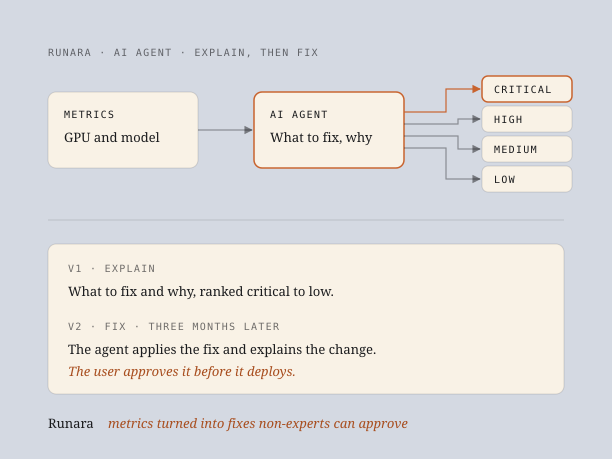

Turning GPU metrics into fixes non-experts can approve
Runara is an AI deployment platform used by teams at companies including Meta and AMD. Many of our beta users weren't ML engineers, and they couldn't read the GPU and model-behaviour metrics the platform showed them. I designed an AI agent that reads the metrics for them. The first version explained what to fix and why. Three months later, it could make the fix, once the user approved it.
- My role Senior Product Designer. Sole designer, also acting as PM.
- Team Me, an engineer I smoke-tested each build with, and the CEO and CTO at the weekly review.
- Duration Two versions, three months apart.
- Outcome 64% engaged with the explanations. In the Fix version, 83% went on from explanation to Fix.

Metrics most of our users couldn't read.
Runara shows GPU and model-behaviour metrics for every deployment, including hallucination rate. That works for an ML engineer. Many of our beta users weren't ML engineers. They could see the numbers, but the numbers didn't tell them what to do.
I also worked with the CTO to cut the default metrics view down to the few metrics users relied on, and moved the rest behind search. The agent goes further: it reads the metrics for the user, and says what to change.
Non-technical beta users couldn't read GPU and model-behaviour metrics, so they couldn't tell what was wrong with a deployment or what to fix first.
An agent that says what to fix, and why.
The agent analyses the metrics and turns them into a list of issues, ranked critical, high, medium and low. Each issue says what to fix and why. The reasoning is there for anyone who wants to check it: one click expands it.
Three months later, a Fix button. The user still decides.
Three months after the first version, I added a Fix button. The flow:
- The agent flags an issue and explains it, as before.
- The user clicks Fix.
- The agent applies the fix and explains what it changed.
- The user approves it. Only then does it deploy.
Working code, not mockups.
Both versions went through the same loop:
- Designed it in Figma.
- Built it in a feature branch with Claude Code.
- Smoke-tested it and fixed bugs with an engineer.
- Released it to beta users.
- Validated it with analytics and interviews.
- Presented it to the CEO and CTO at the weekly review, then handed it to engineering.
How the numbers were measured.
Explanation engagement (64%): users clicking to expand the agent's reasoning, in the Explain version.
Engagement-to-action rate (83%): from issue, to explanation, to clicking Fix, in the Fix version.